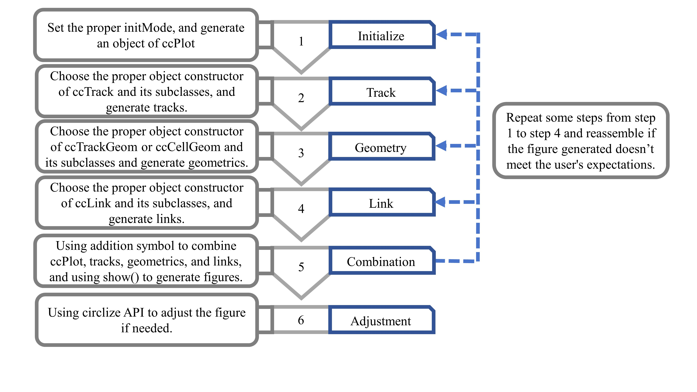

Dot plot categorized by chromosome, and zoomed for partial chromosome categorization
Source:vignettes/example1.Rmd
example1.RmdCode
It plots the chromosome bands in the outer circle and the corresponding scatter points in the inner circle. Magnified views of chromosomes 7 and 8 are shown on the left parts of the circles. The entire code process is like solving an addition problem, and the data flow of drawing can be clearly understood. Note that the data mapping technique is used in step 3. The coordinate parameter of the function ccGenomicPoints () is missing. It will take the coordinate parameter value of the corresponding sector from the variable track1. This technique ensures consistency of coordinate data while reducing code duplication.

Step 1
cytoband = read.cytoband()
df = cytoband$df
chromosome = cytoband$chromosome
chr.len = cytoband$chr.len
df_zoom = df[df[[1]] %in% c("chr7", "chr8"), ]
df_zoom[[1]] = paste0(df_zoom[[1]], "_zoom")
df = rbind(df, df_zoom)
bed = generateRandomBed(nr = 1000)
bed_zoom = bed[bed[[1]] %in% c("chr7", "chr8"), ]
bed_zoom[[1]] = paste0(bed_zoom[[1]], "_zoom")
bed = rbind(bed, bed_zoom)
start90 = ccPar(start.degree = 90)
cc = ccPlot(initMode = "initializeWithIdeogram", cytoband = df, sort.chr = FALSE,
sector.width = c(chr.len/sum(chr.len), 0.5, 0.5))Step 2
trak1 = ccGenomicTrack(data = bed)Step 3
all_cell = ccCells(sector.indexes = unique(df[[1]])) + ccGenomicPoints(pch = 16,
cex = 0.8)
trak1 = trak1 + all_cellStep 4
chr7_x_start = min(df[which(df$V1 == 'chr7'),2])
ch7_x_end = max(df[which(df$V1 == 'chr7'),3])
link_ch7_to_zomm = ccLink("chr7", c(chr7_x_start, ch7_x_end), "chr7_zoom",
c(chr7_x_start, ch7_x_end), col = "#0000FF10", border = NA)
chr8_x_start = min(df[which(df$V1 == 'chr8'),2])
ch8_x_end = max(df[which(df$V1 == 'chr8'),3])
link_ch8_to_zomm = ccLink("chr8", c(chr8_x_start, ch8_x_end), "chr8_zoom",
c(chr8_x_start, ch8_x_end), col = "#FF000010", border = NA)References
- Gu, Z., Gu, L., Eils, R., Schlesner, M., and Brors, B. (2014). Circlize implements and enhances circular visualization in R. Bioinformatics 30 (19), 2811–2812. doi:10.1093/bioinformatics/btu393
- Zhang Z, Cao T, Huang Y and Xia Y (2025) CirclizePlus: using ggplot2 feature to write readable R code for circular visualization. Front. Genet. 16:1535368. doi:10.3389/fgene.2025.1535368